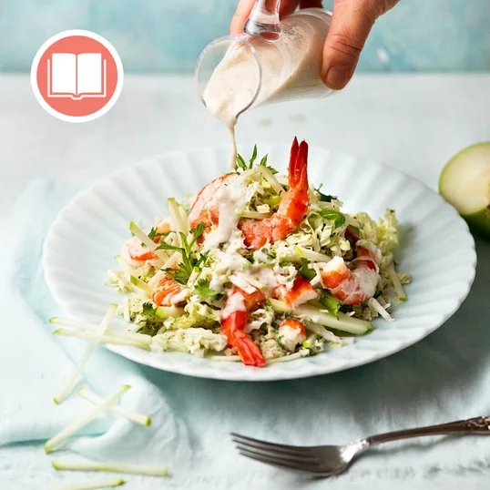
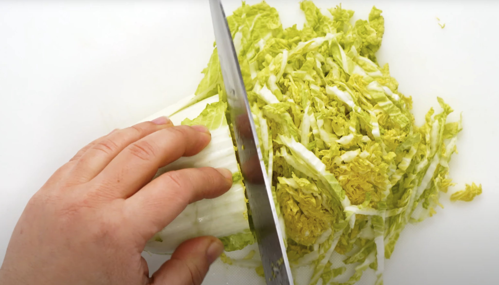
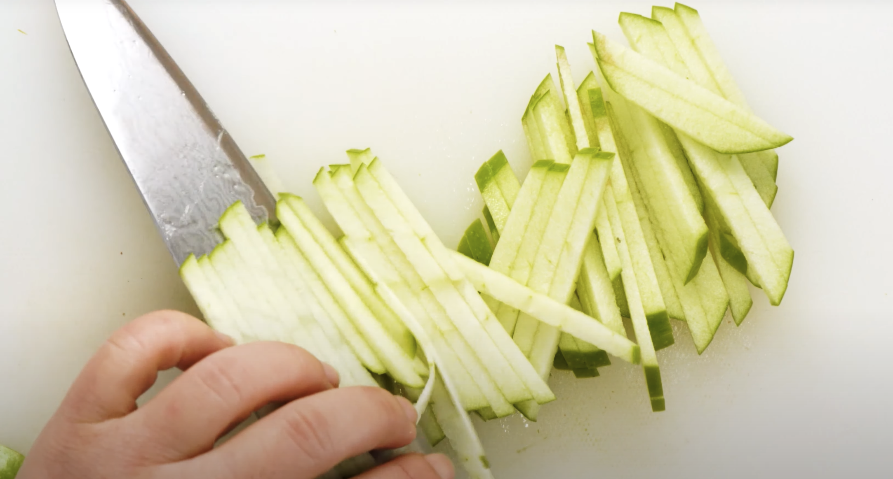

Island Bliss - Prawn Salad with Coconut Lime Dressing
Home

Description
This salad features super-fresh flavours and great textures, perfect for when you are a bit over hearty meats and want something
light yet fulfilling. The combination of plump prawns, sweet apple, crunch cabbage and vibrant herbs all combed with the richness
of a lime coconut dressing is amazing.
Originally this recipe was sourced from the great woman Recipetineats who has quite a wealth of good recipes to follow.
I've imported this recipe into this page as the link only has a how-to video guide, no actual recipe. This is because this
recipe is a cookbook exclusive recipe but I don't gatekeep so I've translated the video into the recipe below.
Link to the original post and video is here
Ingredients
- Ayam 100% natural coconut cream - 270ml
- 1 lime
- 1 Cabbage
- Prawns
- Granny smith apple
- Fish sauce
- Sugar
- Garlic
- Ginger
- Green onion
- Mint
- Coriander
Steps
- Making the dressing
- Empty out the coconut cream into a large cup and leave it in the fridge for at least an hour
- Grate some lime zest into the cream alongside two wedges of lime juice
- Add fish sauce, sugar, grated garlic and ginger
- Mix well until combined
- Preparing the salad
- Chop up the whole cabbage into inch length portions, image for reference:

- Optional: Cut prawns in half so they are easier to eat in bitesized portions
- Cut the apple lengthwise and then again to create apple cubed slices, image for reference:

- Squeeze a lime wedge over the apples and then mix the slices around
- Assembling the salad
- Combine the sliced cabbage, apples, green onion and a bit of the dressing together in a bowl and toss together
- Then add the prawns, mint and coriander to toss once again
- Serving the salad
- Grab a portion of the salad and place it onto a plate
- Add some extra dressing onto the portioned salad
- Garnish with some extra coriander and mint alongside lime wedges
- Enjoy!
Notes
- The dressings arn't a necessity, use if you have
- I found for two people half of half of a cabbage is enough (so a quarter)
- Is a salad with quite an amount of texture, leaning on the fibrous side
- Depending on which part of the cabbage you cut will impact the crunchyness of the salad